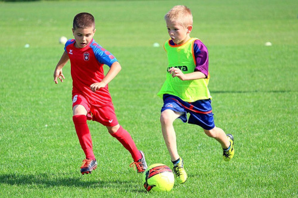

piłka nożna
akademia piłkarska - trenuj z ekstra-klasą
- Celem zajęć jest nauka podstawowych elementów techniki piłki nożnej w formie gier i zabaw, kształtowanie koordynacji ruchowej młodego sportowca, nauka współpracy w grupie;
- Inne atrakcje: udział w turniejach, możliwość wyjazdów na obozy sportowe, obozy dochodzeniowe;
- Prowadzący zajęcia: trenerzy Ekstraklasy z licencją UEFA;
- ZAPISY I KONTAKT : Marcin Gędłek, tel.: 604 613 941; Piotr Górecki, tel.: 604 177 509, pilkanozna@ukswilga.pl
terminy zajęć:
- Klasy 1 i 2 - wtorki 15.00 - 16.15, 16.00 - 17.15; czwartki 16.00 - 17.15 (treningi ruszają od 21.09)
- Klasy 2, 3 i 4 - grupa biorąca udział w rozgrywkach ligowych Małopolskiego Związku Piłki Nożnej - poniedziałki i czwartki - 16.00 - 17.15
- Klasy 4 i 5 - poniedziałki i środy - 15.00 - 16.15
- Klasy 6 i 7 - poniedziałki i środy - 15.00 - 16.15
